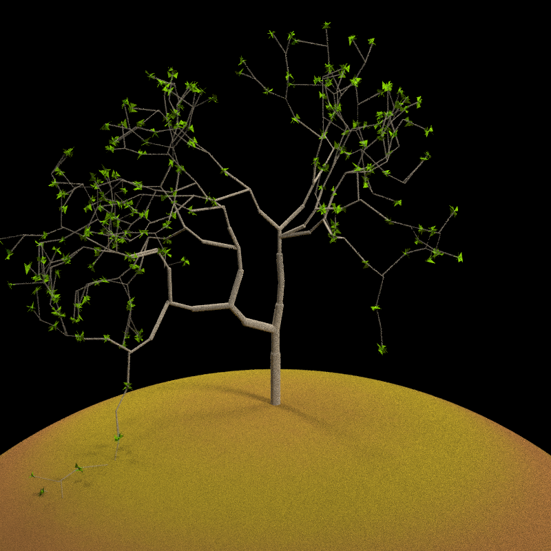

raybonsai: Generate 3D procedural trees in R, rendered with rayrender! Procedural generation code based on the flametree package by Davielle Navarro.
Installation
You can install raybonsai with the remotes package:
remotes::install_github("tylermorganwall/raybonsai")
Example
There are currently only two user-facing functions in raybonsai: generate_tree() and render_tree(). generate_tree() generates a tree that follows a certain set of constraints that you set and returns a rayrender scene describing the tree. render_tree() automatically adds ground, sets up lighting, and sets up the camera so the tree is in frame, but is otherwise just a light wrapper around rayrender’s render_scene() function.
Here are some examples:
library(raybonsai) library(rayrender) generate_tree() %>% render_tree(width=800, height=800)

Change the branch angles and depth of the tree:
generate_tree(seed = 4321, branch_angle_vert = seq(-10,20,by=1), branch_depth = 8, leaf_color = "yellow", leaf_depth_start = 5) %>% render_tree(width=800, height=800)

Adjust the colors of the ground and the tree:
generate_tree(seed = 20, branch_angle = c(-30,0, 30), branch_scale = c(0.9,1), branch_depth = 7, leaf_color = "chartreuse4", leaf_depth_start = 5, branch_color = "tan") %>% render_tree(ground_color1 = "darkgoldenrod4", ground_color2 = "chocolate4", width=800, height=800)

Add your own lighting using rayrender:
generate_tree(seed = 222, branch_angle = c(-20, 20), branch_scale = c(0.8,0.9), branch_split = 3, branch_depth = 6 , leaf_color = "chartreuse4", leaf_depth_start = 5, branch_color = "tan") %>% add_object(sphere(x=5,y=1,radius=1,material=light(color="magenta",intensity = 30))) %>% add_object(sphere(x=-5,y=1,radius=1,material=light(color="dodgerblue",intensity = 30))) %>% render_tree(lights = FALSE, ground_color1 = "grey50",ground_color2 = "grey50", width=1200,height=800)

Add environment lighting with HDR images:
generate_tree(seed = 222, branch_angle = c(-20,20), branch_scale = c(0.8,0.9), branch_depth = 10 , leaf_color = "chartreuse4", leaf_depth_start = 5, branch_color = "tan") %>% render_tree(lights = FALSE, environment_light = "~/Desktop/hdr/kiara_3_morning_2k.hdr", width=1200, height=800)